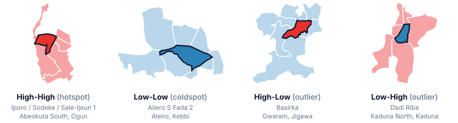

Technical Note: Advanced Spatial Statistics
Intuitive explanations, diagrams, worked examples and complete formulations, a companion reference for the lecture series. "Illustrative" examples use hypothetical numbers; "Course Result" boxes report outputs from the class dataset.
1. Why Space Breaks Standard Statistics
Every statistics course begins with a deceptively simple assumption: your observations are independent of each other. The temperature measured in Lagos today has nothing to do with the temperature measured in Accra. The crop yield of one farmer's field tells you nothing about the field next door. This assumption is the engine that makes classical tests, t-tests, OLS regression, ANOVA, run cleanly.
The moment your data has geographic coordinates, this assumption collapses. A child's nutritional status in one ward is tightly linked to the nutritional status of children in neighbouring wards. Property prices on one block bleed directly into prices on adjacent blocks. Disease incidence in one district ripples into adjacent districts through shared roads, markets, and social networks.
This pervasive geographic interdependence was captured by Waldo Tobler in 1970 as the First Law of Geography: "Everything is related to everything else, but near things are more related than distant things."
The covariance between any two geographic observations $Z(s_i)$ and $Z(s_j)$ is a decreasing function of their separation distance. Close neighbours share high covariance; distant units share near-zero covariance. The function $C(\cdot)$ is the covariance kernel, the mathematical shape of how influence decays with distance.
The Consequence: Phantom Precision
When observations are spatially correlated, each new geographic data point carries less new independent information than it appears to. Fifty census tracts that are all adjacent to each other do not give you fifty independent data points, they might effectively give you fifteen or twenty, because they are all echoing each other. Standard software, unaware of this, computes standard errors by dividing by $(n - k)$ when it should divide by a much smaller effective sample. The result: standard errors are far too small, t-statistics are too large, and p-values declare significance that does not actually exist, a phenomenon called Type I error inflation.
A researcher fits an OLS model explaining maternal mortality across 200 health wards using poverty, distance to clinic, and education. The model reports $p < 0.01$ for distance to clinic. She concludes the effect is highly significant.
However, a Moran's I test on the OLS residuals returns $I = 0.42$, $p < 0.001$, the residuals are strongly clustered. The 200 wards carry the effective information of perhaps 80 independent observations. The standard errors are artificially small. The correct model, a Spatial Error Model, inflates the standard error for distance, and the $p$-value becomes $0.09$. The earlier conclusion was an artefact of spatial autocorrelation.
2. Spatial Weights Matrices ($W$), Encoding Geography as Algebra
Before we can model space, we must define space. Who is a neighbour of whom? How much does each neighbour matter? The spatial weights matrix $W$ is an $n \times n$ matrix where entry $w_{ij}$ encodes the geographic relationship between unit $i$ and unit $j$. The diagonal is always zero ($w_{ii} = 0$), no unit is its own neighbour.
2.1 How to Define Neighbours
Analogy: Think of a chess queen, which can move in all eight directions. Unit $i$ and unit $j$ are neighbours if they share any boundary edge or even just touch at a corner point. This is the most common definition for administrative polygons like wards, LGAs, or counties.
Applied use: Modelling disease spread between administrative health wards, where transmission can occur even where two districts share only a corner point.
Analogy: Your $k$ nearest neighbours are simply the $k$ locations physically closest to you. Unit $i$ connects to the $k$ geographically nearest units, regardless of shared borders.
Applied use: Point data (individual household survey locations, well positions, farm GPS coordinates) where polygons do not exist.
Analogy: Gravity. The gravitational pull between two planets decreases with distance squared. Similarly, $w_{ij} = d_{ij}^{-\alpha}$ means influence decays as a power function of separation distance $d_{ij}$.
Applied use: Economic market influence, radio signal propagation, agricultural input diffusion, any process where impact fades smoothly with distance.
2.2 Row Standardisation, Making Comparisons Fair
Different units have different numbers of neighbours. A central LGA might share borders with eight others; a peripheral one at the state boundary might have only two. Raw binary weights would make central units dominate simply because they have more neighbours. Row standardisation rescales each row so all weights for unit $i$ sum to exactly 1, producing a weighted average of neighbours.
2.3 The Spatial Lag, A Neighbourhood Average
Multiplying row-standardised $W$ by a variable vector $y$ produces the spatial lag: for each unit $i$, the weighted average value of $y$ in its neighbours. If $y$ is malaria incidence, then $[Wy]_i$ is the average malaria incidence in the neighbours of unit $i$. This is the spatial context for every observation.
3. Measuring Spatial Clustering, Is the Pattern Random?
Before fitting any spatial model, we need to ask: is there actually a spatial pattern in the data? Two families of statistics answer this: global tests (one number summarising the entire map) and local tests (a different number for every location, revealing where clusters are).
3.1 Global Moran's $I$, Is There Clustering Anywhere?
Moran's $I$ (Moran, 1950) is the spatial analogue of a correlation coefficient. Instead of correlating two different variables, it correlates one variable with itself in the neighbouring locations. It asks a single question about the whole map: when a place has a high value, do its neighbours tend to have high values too?
Reading the formula piece by piece
- $(y_i - \bar{y})(y_j - \bar{y})$, the cross-product: positive when two neighbours are on the same side of the mean (both high or both low), negative when one is above and the other below.
- $w_{ij}$, the neighbour filter: only pairs that are neighbours in $W$ count. Non-neighbours have $w_{ij} = 0$ and drop out.
- $\sum_i (y_i - \bar{y})^2$, the variance: rescales the sum so that $I$ does not depend on the units of $y$ (naira, percentages, counts).
- $n / S_0$, the scaling: corrects for how many neighbour links exist. With row-standardised $W$, $S_0 = n$ and this factor is simply 1.
The Moran scatterplot: $I$ is a slope
Standardise the variable to $z_i$ and plot each unit's own value $z_i$ (horizontal axis) against the average of its neighbours $[Wz]_i$ (vertical axis). With row-standardised weights, Moran's $I$ is exactly the slope of the regression line through this cloud. The two dashed lines at zero split the plot into four quadrants, which become the LISA categories in Section 3.2.
What values of $I$ look like on a map
- $I > E[I]$: positive spatial autocorrelation, similar values cluster (high near high, low near low). This is by far the most common finding for social, economic and health data.
- $I \approx E[I]$: no spatial pattern, values are arranged as if at random.
- $I < E[I]$: negative spatial autocorrelation, dissimilar values sit next to each other (a checkerboard). Rare in practice; can arise from competition, for example two markets that cannot both thrive side by side.
Is the value significant? Expected value, $z$-score and permutation
Under complete spatial randomness, $I$ is not centred on 0 but on a small negative number that depends only on $n$:
There are two ways to decide whether an observed $I$ could have happened by chance:
- Analytical $z$-score: compare $I$ with its expected value using its theoretical variance. $|z| > 1.96$ means significant at the 5% level.
- Permutation test (the modern default in PySAL, GeoDa and ArcGIS): shuffle the values randomly across the map $M$ times (e.g. 999), recompute $I$ each time, and count how many shuffled maps ($R$) produced an $I$ at least as extreme as the real one. This builds the reference distribution directly from the data, with no normality assumption.
Five wards sit in a line with values $y = (2, 4, 6, 8, 10)$, so $\bar{y} = 6$ and the deviations are $z = (-4, -2, 0, 2, 4)$. Each ward's neighbours are the wards on either side (row-standardised), giving neighbour averages $Wz = (-2, -2, 0, 2, 2)$.
Numerator: $\sum_i z_i [Wz]_i = 8 + 4 + 0 + 4 + 8 = 24$. Denominator: $\sum_i z_i^2 = 16 + 4 + 0 + 4 + 16 = 40$. Because $W$ is row-standardised, $n/S_0 = 1$, so $I = 24 / 40 = 0.60$.
The expected value under randomness is $E[I] = -1/(5-1) = -0.25$, so the observed $I$ is well above it: low wards sit next to low wards and high next to high. But with only five wards there are just 120 possible arrangements; a 999-permutation test gives a pseudo $p \approx 0.07$. Lesson: a large $I$ on a tiny map is not automatically significant. Always read $I$ together with its $p$-value.
On the course dataset (satellite-derived purchasing power across Nigeria's administrative wards, queen contiguity), Global Moran's $I = 0.306$ with $z = 48.7$ and $p < 0.001$. Positive, moderate and overwhelmingly significant: wealthier wards cluster with wealthier wards, poorer with poorer. It tells us clustering exists, but not where. That is the job of LISA.
How to report and interpret Global Moran's $I$
- Report $I$, $E[I]$, the $z$-score or pseudo $p$-value, the number of permutations and the weights used (e.g. "queen contiguity, row-standardised").
- $I$ depends on $W$: the same data can give different values under queen, k-NN or distance weights. Test the sensitivity of your conclusion.
- $I$ is a single global average. A moderate $I$ can hide very strong local clusters in one region and none elsewhere.
- Run Moran's $I$ on the outcome (is there a pattern to explain?) and on the OLS residuals (did the model explain it away?).
3.2 Local Moran's $I_i$ (Anselin LISA), Where are the Clusters?
Anselin (1995) showed that Global Moran's $I$ can be broken into one contribution per location: the Local Indicator of Spatial Association (LISA). Each unit gets its own $I_i$, and with row-standardised weights the average of all the local values equals the global $I$. In the five-ward example above, the local values are $(1, 0.5, 0, 0.5, 1)$, whose mean is exactly $0.6$.
Read it as (how unusual am I) $\times$ (how unusual are my neighbours). The sign of $I_i$ tells you whether a unit resembles its neighbours; the quadrant tells you which kind of resemblance:

- High-High (Hotspot): high value, high neighbours ($I_i > 0$). Example: a belt of high-mortality wards in a conflict zone.
- Low-Low (Coldspot): low value, low neighbours ($I_i > 0$). Example: an entrenched zone of deprivation needing targeted social intervention.
- High-Low (Spatial Outlier): high value among low neighbours ($I_i < 0$). Example: an "Island of Wealth", a commercial ward surrounded by poverty.
- Low-High (Spatial Outlier): low value among high neighbours ($I_i < 0$). Example: an "Opportunity Sink", an underserved pocket inside an affluent corridor.
Significance, and the multiple-testing trap
Each $I_i$ is tested with a conditional permutation: unit $i$'s value is held fixed while the values around it are shuffled (typically 999 times). Only units with pseudo $p < 0.05$ are coloured on a LISA cluster map; everything else is "Not Significant".
With thousands of units, about 5% will look significant by chance alone. For 9,000 wards that is roughly 450 false positives. Guard against this by using a stricter cut-off ($p < 0.01$), a False Discovery Rate (FDR) correction, or by only acting on clusters that are also visible on the global pattern.
About 23% of wards sit in a statistically significant cluster or outlier. Hotspots concentrate around Lagos and Abuja; coldspots form wide belts in the north. The 214 High-Low "Islands of Wealth" are natural regional anchors for investment, while the 366 Low-High "Opportunity Sinks" are underserved pockets that national and state averages hide.

How to read a LISA cluster map correctly
- A significant High-High unit is the core of a cluster: the cluster is that unit and its neighbours, so the true cluster is slightly larger than the coloured area.
- Always show the cluster map next to a significance map ($p$ = 0.05, 0.01, 0.001) so readers can see how strong each cluster is.
- Clusters depend on $W$ and on the scale of the units; re-run with a second weights definition before making a decision.
- LISA describes patterns, not causes. Use the regression models in Sections 4 to 9 to explain why a cluster exists.
3.3 Getis-Ord $G_i^*$, Pure Hotspot Detection
The Getis-Ord $G_i^*$ statistic (Getis & Ord, 1992; Ord & Getis, 1995) is purpose-built for hotspot and coldspot detection. It looks at the sum of values in a neighbourhood, including the unit itself (that is what the star means), and asks whether that local sum is much larger or smaller than expected if values were spread at random. The result is directly a $z$-score.
| Question | Local Moran's $I_i$ (LISA) | Getis-Ord $G_i^*$ |
|---|---|---|
| What it compares | A unit with its neighbours (similarity) | A neighbourhood sum with the global expectation (intensity) |
| Includes the unit itself? | No ($w_{ii} = 0$) | Yes ($w_{ii} \neq 0$) |
| Finds outliers (HL, LH)? | Yes | No, only hot and cold spots |
| Best for | Clusters and anomalies, e.g. Islands of Wealth | Where intensity concentrates, e.g. disease or crime hotspots |
| Space-time version | Local Outlier Analysis | Emerging Hot Spot Analysis (Section 10) |
Using $G_i^*$ on food insecurity scores across sub-Saharan districts, analysts identify a statistically significant coldspot cluster ($z < -2.5$) in the Ethiopian highlands, a region with high agricultural productivity, and a hotspot cluster ($z > 3.1$) across the Sahel belt, guiding emergency food aid allocation.
4. OLS Regression, How It Works and Why Space Breaks It
Ordinary Least Squares (OLS) finds the line that passes as close as possible to all data points, minimising the sum of squared vertical distances from each point to the fitted line. The Gauss-Markov theorem guarantees OLS is the Best Linear Unbiased Estimator (BLUE), under five assumptions. The most important for spatial analysis: residuals must be uncorrelated with each other.
4.1 What Happens When Space Violates This
All LGAs in the northeast are jointly affected by a drought your model has no variable for. Their residuals are all positive and clustered. OLS treats these as independent errors, so it divides by $n - k$ when it should divide by a much smaller effective number. Result: standard errors are too small, t-statistics too large, and you declare effects as significant that are not.
This is like measuring the weight of 50 members of the same sports team, they train together, so their weights are correlated. Treating them as independent samples from the general population gives overconfident estimates.
If the outcome in each unit is driven partly by outcomes in neighbouring units, omitting this effect is like omitting a critical predictor. OLS coefficients absorb this omitted spatial feedback and become biased, not just inefficient. Even with infinite data, OLS converges to the wrong answer.
A school district builds a new library. Neighbouring districts benefit too (students travel there, resources diffuse). Ignoring this means the coefficient on library investment is underestimated, because OLS attributes only local effects and misses neighbourhood spillovers.
4.2 OLS Spatial Diagnostic Tests
- Moran's I on residuals: The single most important test. If significant, OLS is invalidated.
- LM-Lag: Tests whether a spatial lag of the outcome ($\rho Wy$) should be added. Significant → consider SAR model.
- LM-Error: Tests whether the error process is spatially autocorrelated ($\lambda Wu$). Significant → consider SEM model.
- Robust LM statistics: When both LM-Lag and LM-Error are significant, Robust LM tests control for each other, pointing to the dominant process.
5. Spatial Lag Model (SAR), Modelling Contagion & Peer Effects
5.1 The Core Intuition
The SAR model is built for situations where outcomes are directly caused by outcomes in neighbouring units. Think of it as a social network effect: my decision about whether to vaccinate my child is influenced by whether my neighbours vaccinated theirs. Crime in one neighbourhood spills into adjacent neighbourhoods as criminals relocate.
5.2 The Multiplier Effect
Because I am affected by my neighbours, and my neighbours are affected by their neighbours (who may loop back to me), the system creates an infinite series of feedback loops. The total multiplier is $\frac{1}{1 - \rho}$, just like the Keynesian fiscal multiplier in macroeconomics.
A supermarket chain models weekly revenue across 400 store locations. The SAR coefficient $\hat{\rho} = 0.45$. The multiplier is $\frac{1}{1-0.45} = 1.82$. Every ₦1 million in marketing spend at a focal store generates an expected ₦1.82 million in total regional revenue, because elevated foot traffic in one location spills into nearby stores through customer discovery and brand awareness.
A naive OLS model would have estimated only the direct ₦1M effect, missing the ₦820,000 in neighbourhood spillovers.
5.3 Interpreting $\hat{\rho}$
- $\hat{\rho} = 0.45$ means: 45% of the outcome in any location is driven by the weighted average outcome of its neighbours, before any predictor effects.
- Every local intervention is amplified system-wide by the multiplier $\frac{1}{1-\hat{\rho}}$.
- OLS reports only the direct local effect. SAR adds the entire indirect ripple chain through neighbours. Ignoring SAR when it is present biases all $\hat{\beta}$ estimates because $Wy$ becomes an omitted variable.
6. Spatial Error Model (SEM), Modelling Unmeasured Regional Shocks
6.1 The Core Intuition
The SEM addresses a different problem. Here, the outcome does not directly cause itself in neighbours. Instead, there are unobserved forces that simultaneously affect geographically clustered groups of units, and the model has no variable for those forces. The residuals of the model cluster spatially because the omitted variable is itself spatially clustered.
An economist models crop yields across 300 farming districts in West Africa using rainfall, temperature, and fertiliser access. The OLS residuals show Moran's $I = 0.51$, strong clustering remains. The clustered residuals represent shared soil quality gradients and correlated weather patterns not captured by the three predictors.
Fitting a SEM with $\hat{\lambda} = 0.48$ corrects the error correlation. The coefficient on fertiliser access grows from $\hat{\beta} = 0.31$ (OLS, underestimated) to $\hat{\beta} = 0.44$ (SEM, correctly estimated), because the inflated standard errors from spatial error correlation had been masking the true precision of the estimate.
6.2 SAR vs. SEM, The Decision Rule
- Is the outcome contagious? Does high disease in my district actually cause high disease in your district (through shared water sources, migration)? → SAR
- Is the outcome driven by shared unobserved forces? Is disease high in neighbouring districts because they are all affected by the same drought or governance failure, not because of direct contagion? → SEM
$\hat{\lambda} = 0.6$ means: 60% of unexplained variation in each unit can be predicted from its neighbours' unexplained variation. OLS standard errors were severely underestimated, all significance tests were inflated.
7. Spatial Durbin Model (SDM), The Richer, Safer Specification
7.1 When Both Channels Operate
The SDM is the most complete spatial specification. It simultaneously models outcome spillovers (like SAR) and predictor spillovers, the idea that neighbours' characteristics directly affect the focal unit's outcome. Building a new hospital in District A benefits District A directly, but Districts B, C, and D also benefit as residents cross boundaries to seek care. The SDM captures this by including $WX\gamma$: the spatially lagged predictors.
7.2 Direct, Indirect, and Total Effects
In an SDM (or SAR) model, reading $\hat{\beta}$ as the marginal effect is wrong. Because outcomes ripple through the network, the true impact has three components:
An SDM of district-level literacy rates with school funding as a key predictor gives:
Direct effect = 0.42, a 10% increase in school funding in District A directly raises its literacy rate by 4.2 percentage points.
Indirect (spillover) effect = 0.31, it also raises literacy by 3.1 percentage points in surrounding districts (through teacher mobility, student sharing, demonstration effects).
Total effect = 0.73 per 10% investment.
A policymaker who read only $\hat{\beta} = 0.39$ would underestimate the true ROI of education investment by nearly 50%.
LeSage & Pace (2009) proved that SDM produces unbiased coefficient estimates even when relevant spatially correlated variables are omitted, because the $WX\gamma$ term absorbs their influence. This makes SDM the safest default specification when uncertain about which spatial process is at work.
8. Geographically Weighted Regression (GWR), When Relationships Change Across Space
8.1 The Problem: One Size Does Not Fit All
OLS, SAR, SEM, and SDM all assume the relationship between predictors and outcomes is the same everywhere. The effect of rainfall on yield may be strong in semi-arid regions and irrelevant in already-humid tropical zones. The effect of distance to clinic on child mortality may be critical in rural areas but negligible in dense urban areas with many competing facilities.
GWR (Brunsdon, Fotheringham & Charlton, 1996) dissolves this constraint. Instead of one global equation, it fits a separate local regression at every point in space. Each observation $i$ gets its own locally estimated coefficients $\hat{\beta}_k(u_i, v_i)$.
A GWR model of child mortality on clinic access shows:
Rural NE: $\hat{\beta}_{\text{distance}} = 0.74$, strong, significant ($t = 4.2$). Distance is a life-or-death predictor here.
Urban Lagos: $\hat{\beta}_{\text{distance}} = 0.09$, non-significant ($t = 1.1$). Substitutes abound; distance barely matters.
Global OLS: $\hat{\beta} = 0.38$, the average, which accurately describes no specific place.
The GWR map tells planners exactly where to build new facilities for maximum impact.
8.2 How to Interpret GWR Output
- Parameter map: Each district coloured by its local $\hat{\beta}_k$, a continuous surface showing strength and direction of the relationship across geography. Blue-to-red diverging palette: blue = strong negative, red = strong positive.
- Significance masking: Only show coefficients where $|t| > 1.96$ ($p < 0.05$). Greyed-out areas mean the relationship is not statistically detectable there. Never interpret or act on these areas.
- Residual Moran's $I$: After GWR, residuals should show $I \approx 0$, confirming the local model absorbed the spatial structure the global model missed.
- Sharp colour transitions: Rapid changes across adjacent districts signal a governance boundary, ecological threshold, or cultural border where the relationship regime changes.
8.3 Bandwidth & Kernels
The bandwidth $b$ controls how many nearby observations influence each local regression. The optimal bandwidth is chosen by minimising the Corrected AIC (AICc).
- Adaptive Bisquare (recommended): Adapts radius to local data density. In Lagos (dense), bandwidth shrinks to capture fine-grained variation. In Bornu (sparse), it expands to borrow information from farther away.
- Fixed Gaussian: Same physical radius everywhere. Use when the process itself is fixed-scale (e.g. disease transmission radius = 50km).
- If optimal $bw^* = 40$ in a 774-LGA study, each local regression uses its 40 nearest neighbours as primary data, a hyper-local scale. If $bw^* = 600$, the process is essentially global.
9. Multiscale GWR (MGWR), Different Processes, Different Scales
9.1 The Limitation of Standard GWR
Standard GWR forces all predictors to use the same bandwidth. But clinic access varies at the village level while national governance quality varies at the country level. Forcing both to share one bandwidth either over-smooths the local process or under-smooths the regional one. MGWR (Fotheringham, Yang & Kang, 2017) assigns each predictor its own dedicated, separately optimised bandwidth $bw_k$.
An MGWR of child stunting across 30 countries reveals:
Open defecation rate: $bw = 31$ (hyper-local, village sanitation norms change sharply between adjacent communities)
Health facility density: $bw = 124$ (regional, facility catchments span multiple districts)
Climate variability: $bw = 820$ (near-global, rainfall patterns are smooth across large zones)
Standard GWR at $bw = 200$ would have over-smoothed defecation and under-smoothed climate, biasing all three estimates.
9.2 Reading Bandwidth as a Scientific Finding
- Small $bw_k$ (close to 1–20% of $n$): Predictor $k$ operates at a hyper-local scale. Target interventions at community level.
- Large $bw_k \approx n$: Predictor $k$ is essentially global, its coefficient barely changes across the map. Can be represented as a standard OLS term.
Always compare AICc: if $\text{AICc}_{\text{MGWR}} < \text{AICc}_{\text{GWR}} - 3$, the multi-scale structure is statistically meaningful and MGWR should be reported.
10. Space-Time Pattern Mining, Emerging Hot Spot Analysis
Everything so far treats the map as a single snapshot. But the most important policy questions are about change: is this malaria hotspot new or has it always been there? Is it getting worse? Did the intervention in that LGA actually cool it down? ArcGIS Pro's Space Time Pattern Mining toolbox answers these by adding time as a third dimension to the hotspot methods of Section 3.
10.1 Step 1, Build a Space-Time Cube
Create Space Time Cube aggregates events (or ward-level values) into bins. Each bin is one location in one time step, for example "malaria cases in ward 1042 in March 2024". Stacking the time steps for every location produces a cube: the footprint is the map, the vertical axis is time. The tool also runs a Mann-Kendall test on each location's raw counts to report the overall trend.
10.2 Step 2, Getis-Ord $G_i^*$ in Space and Time
Emerging Hot Spot Analysis computes $G_i^*$ for every bin, but its neighbourhood now reaches in two directions: bins within the neighbourhood distance on the map, and bins within the neighbourhood time step window before it. A bin is a hot spot when it and its space-time neighbours are jointly much higher than expected.
10.3 Step 3, Mann-Kendall Trend on Each Location
For every location, the series of $G_i^*$ $z$-scores through time is tested with the non-parametric Mann-Kendall trend test. It asks whether values tend to rise (or fall) over time more often than chance allows, without assuming a straight line or normal errors. The result decides whether a hot spot is intensifying, diminishing or persistent.
10.4 What Comes Out, the Hot Spot Categories
Each location is assigned one pattern. There are eight hot spot patterns, eight mirror-image cold spot patterns, and "No Pattern Detected". The strip next to each name shows twelve time steps (red = significant hot spot, blue = significant cold spot, grey = not significant).
| Pattern | 12 time steps | Definition | How to read it |
|---|---|---|---|
| New | Significant hot spot in the final time step only; never a hot spot before. | A problem that has just appeared. Investigate now. | |
| Consecutive | A single uninterrupted run of hot spot bins in the final time steps; never a hot spot before the run, and less than 90% of all steps are hot. | Newly established and holding. Early intervention window. | |
| Intensifying | Hot spot in at least 90% of time steps, including the final one, and the intensity is increasing significantly. | Getting worse. Highest priority. | |
| Persistent | Hot spot in at least 90% of time steps, with no significant trend in intensity. | Structural and long-standing. Needs a structural response. | |
| Diminishing | Hot spot in at least 90% of time steps, including the final one, but the intensity is decreasing significantly. | Cooling down. Check what is working here. | |
| Sporadic | Hot spot in the final time step, with an on-and-off history; less than 90% of steps are hot and none were cold spots. | Recurrent flare-ups, e.g. seasonal outbreaks. | |
| Oscillating | Hot spot in the final time step that was a significant cold spot in some earlier step; less than 90% of steps are hot. | Unstable, swinging between extremes. | |
| Historical | Not a hot spot in the most recent step, but a hot spot in at least 90% of earlier steps. | A past problem that has faded; confirm it is not simply unreported. |
A state health ministry builds a cube of monthly malaria cases per ward over three years (36 time steps) and runs Emerging Hot Spot Analysis with a 10 km neighbourhood and a 3-month time window. The map returns intensifying hot spots along a new irrigation scheme, persistent hot spots in riverine wards, diminishing hot spots where bed-net distribution began in year two, and a few new hot spots near a recently opened market town.
The response follows the categories: surge resources to intensifying and new hot spots, plan long-term vector control for persistent ones, and document the bed-net programme behind the diminishing ones as evidence for scale-up.
10.5 Related Tools and Where to Run Them
- Local Outlier Analysis: the space-time version of Anselin Local Moran's $I$. It finds space-time clusters and outliers (High-Low, Low-High) and summarises how each location's type changes over time.
- Time Series Clustering: groups locations whose time series behave alike (similar values, or similar shape of change).
- Visualize Space Time Cube in 3D: displays the cube as stacked bins to explore how patterns build up through time.
- In code: ArcGIS Pro's
arcpy.stpmmodule (CreateSpaceTimeCube,EmergingHotSpotAnalysis,LocalOutlierAnalysis). Open-source:sfdep::emerging_hotspot_analysis()in R, andgiddy(spatial Markov, LISA over time) in Python.
Choosing the cube's settings
- Time step: match the process (weekly for outbreaks, monthly for markets, yearly for poverty). Aim for at least 10 time steps so the trend test has power.
- Neighbourhood distance: the spatial reach of the process; use the same reasoning as choosing $W$ in Section 2.
- Neighbourhood time step: how many past steps count as "nearby in time". Too long smears events together; too short loses persistence.
11. Spatial Statistics vs. Machine Learning, When to Use Which
Machine learning models are optimised for one thing: minimising prediction error on new data. They are powerful at this. But if the goal is to understand why something varies, to estimate the magnitude and significance of a specific effect, machine learning provides no reliable answers. "Feature importance" metrics tell you which variables the model used heavily, but say nothing about the direction of causality, the size of a policy-relevant effect, or whether the relationship is statistically significant.
| Dimension | Spatial Statistics & GWR | Machine Learning (RF / XGBoost) |
|---|---|---|
| Primary Goal | Causal inference: why does $y$ vary? How large is the effect of $x$? | Predictive accuracy: produce the most accurate $\hat{y}$ for new data. |
| Coefficient Interpretation | Direct marginal effects with confidence intervals, $p$-values, and significance maps. | No interpretable coefficients. SHAP values are post-hoc approximations, not causal estimates. |
| Spatial Autocorrelation | Explicitly modelled via $W$ matrices, spatial structure is a feature, not a problem. | Spatial autocorrelation causes catastrophic test-set leakage in standard k-fold cross-validation. |
| Policy Transparency | Results are fully auditable: every coefficient has a standard error, a $p$-value, and a clear interpretation. | Black box: cannot explain to a minister, court, or regulator why the model produced a given output. |
| Small Sample Performance | Reliable with small-to-medium $n$ (even $n = 50$ LGAs). | Needs large datasets; overfits badly on small geographic samples. |
Decision Rule
Use Spatial Statistics / GWR when: You need to explain a geographic process, estimate the size of a specific effect, design a policy intervention, or publish findings in a peer-reviewed journal. You need coefficients with signs, magnitudes, and uncertainty bounds.
Use Machine Learning when: The problem is purely predictive, you need to map a variable everywhere using satellite features, and interpretation is not required. Always pair with spatial block cross-validation to avoid leakage.
Best practice: Use both. Fit GWR for structural understanding and hypothesis testing. Use ML for high-resolution prediction. The two approaches are complementary, not competing.
12. Master Model Specification Reference
| Model | Core Equation | The Problem It Solves | Real-Life Applied Use Case |
|---|---|---|---|
| OLS |
$$y = X\beta + \varepsilon$$
Where: $y$ is the outcome vector, $X$ is the design matrix of explanatory variables, $\beta$ is the vector of fixed global coefficients, and $\varepsilon \sim N(0, \sigma^2 I)$ is independent random error noise.
|
Aspatial baseline. Valid only when residual Moran's $I \approx 0$ ($p > 0.05$). | Non-geographic data; or geographic data where spatial randomness is confirmed by diagnostics. |
| Spatial Lag (SAR) |
$$y = \rho Wy + X\beta + \varepsilon$$
Where: $\rho$ (rho) is the spatial autoregressive coefficient measuring direct outcome spillover strength, $W$ is the standardized spatial weight matrix, $Wy$ is the spatial lag of the outcome, $X\beta$ represents direct covariate effects, and $\varepsilon$ is random error.
|
Endogenous peer effects / contagion. Multiplier: $\frac{1}{1-\rho}$. | Retail competition; epidemic diffusion; crime displacement; school achievement peer effects. |
| Spatial Error (SEM) |
$$y = X\beta + u, \; u = \lambda Wu + \varepsilon$$
Where: $X\beta$ captures independent covariate effects, $u$ is spatially correlated structural noise, $\lambda$ (lambda) measures spatial error autoregression strength across neighbours, $W$ is spatial weight matrix, and $\varepsilon$ is spherical random noise.
|
Unobserved regional shocks inflate error correlation and shrink standard errors. | Agricultural yields (soil quality), disease rates (shared climate), welfare (governance quality). |
| Spatial Durbin (SDM) |
$$y = \rho Wy + X\beta + WX\gamma + \varepsilon$$
Where: $\rho Wy$ captures endogenous outcome spillovers, $X\beta$ measures direct local predictor effects, $WX\gamma$ measures exogenous predictor spillovers from neighbouring values, and $\varepsilon$ is random error.
|
Both outcome and predictor spillovers. Safest general specification. Decomposes Direct, Indirect, and Total effects. | Hospital/school investment spillovers; infrastructure impact analysis; multi-district policy evaluation. |
| GWR |
$$y_i = \beta_0(u_i,v_i) + \sum \beta_k(u_i,v_i) x_{ik} + \varepsilon_i$$
Where: $(u_i,v_i)$ are coordinates of location $i$, $\beta_0(u_i,v_i)$ is local intercept, $\beta_k(u_i,v_i)$ are continuous local regression coefficients estimated at point $i$ using spatial kernel weights, and $\varepsilon_i$ is local error.
|
Spatial heterogeneity, relationships differ by location. Produces local coefficient maps. | Clinic access effect on mortality (varies urban/rural); fertiliser response by agro-ecology zone. |
| MGWR |
$$y_i = \sum_k \beta_{bw_k}(u_i,v_i) x_{ik} + \varepsilon_i$$
Where: $bw_k$ is the specific optimal spatial bandwidth selected for predictor $k$, allowing different variables to operate at local, regional, or global spatial scales.
|
Multi-scale heterogeneity, each predictor operates at its own geographic scale. | Separating hyper-local sanitation effects ($bw$ = 31) from regional climate effects ($bw \approx n$). |